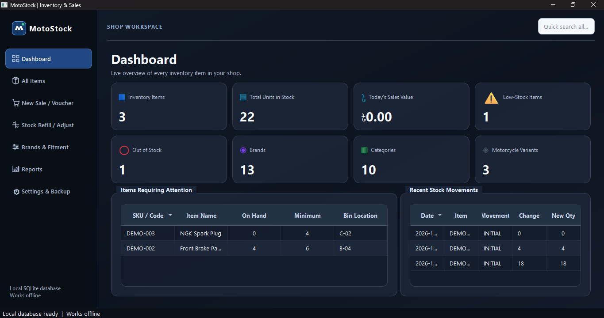

MotoStock
A simple, offline-first Windows app for motorcycle parts and service shops: keep stock under control, print sales vouchers, track customer dues, and keep encrypted backups of your shop data in your own Google Drive.

What MotoStock does
- Inventory - items with photos, brands, categories, bike fitment, stock levels and low-stock warnings.
- Sales & vouchers - fast sales with discounts, printed or shared vouchers in Bangla, English or both.
- Dues - partial payments, outstanding balances and later payment collection.
- Stock control - refills, adjustments and a full movement history.
- Reports - sales, profit and stock reports for any period.
- Works offline - your data lives in a local database on your own computer.
Google Drive backup (optional)
MotoStock can back up your shop data to your own Google Drive. When you choose Sign in with Google and allow access, the app can:
- see the email address of the Google account you chose, to show which account is connected;
- create, list, download and delete only the backup files that MotoStock itself created in a folder named “MotoStock Backups”. It cannot see any of your other Drive files.
Every backup is encrypted on your computer with a password only you know, before it is uploaded. Read the full Privacy Policy for details, including how to disconnect and delete your data.
Contact
Questions or support: supportmotostock@gmail.com